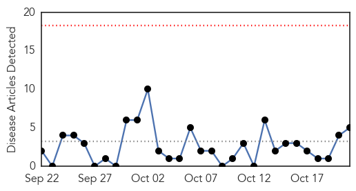
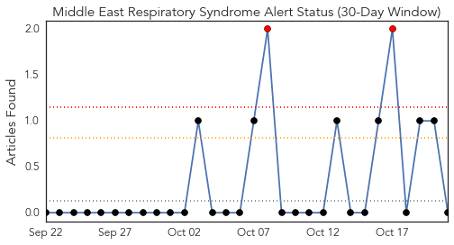
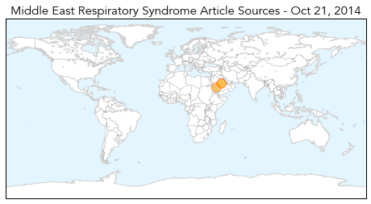
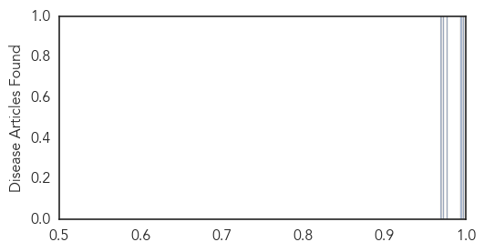

Influenza
30-Day Web Trend
0 alerts, 2 warnings

30-Day Twitter Trend
1 alerts, 0 warnings

Article Locations

Article Confidences

Top Articles:
- 0.999
- “20 people have already been hospitalized:” State health officials urge residents to get flu shot
- 0.985
- Groups urge vaccinations as first cases arrive
- 0.964
- CDC Apps Provide Easy Access to Health Information
- 0.929
- Nova Scotia flu shot campaign focuses on expectant mothers - Halifax
- 0.921
- OHSU, partners Kineta, UW, VGTI Florida awarded NIH contract to develop vaccine adjuvants
- 0.905
- Health experts warn people to prepare for the flu
- 0.833
- Health officials offer ways to protect yourself from deadly viru
Top Tweets:
-
No tweets found for Oct 21, 2014
MERS
30-Day Web Trend
0 alerts, 0 warnings

30-Day Twitter Trend
2 alerts, 0 warnings

Article Locations
Article Confidences
Top Articles:
Top Tweets:
-
No tweets found for Oct 21, 2014